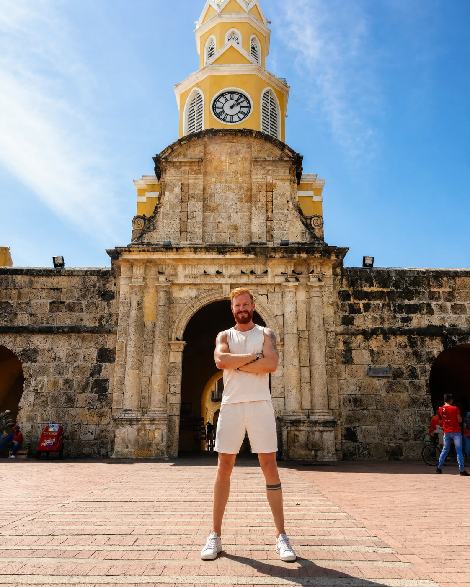
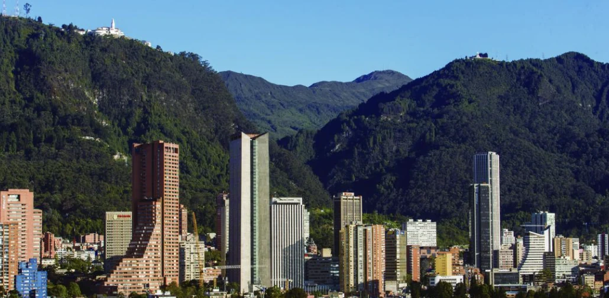
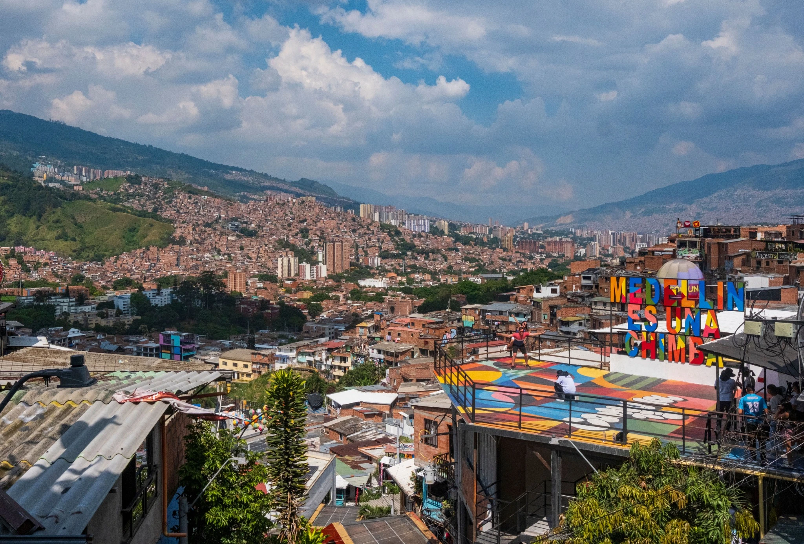
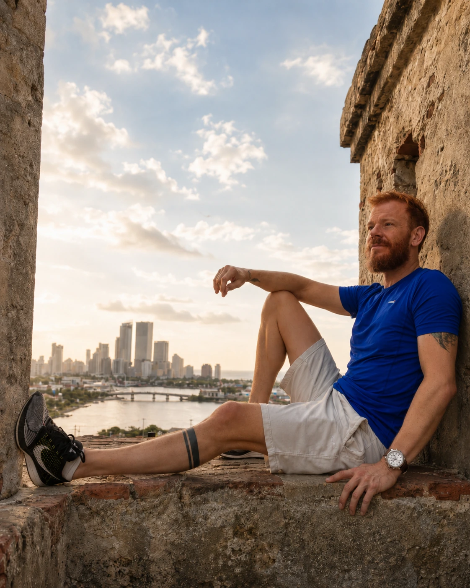
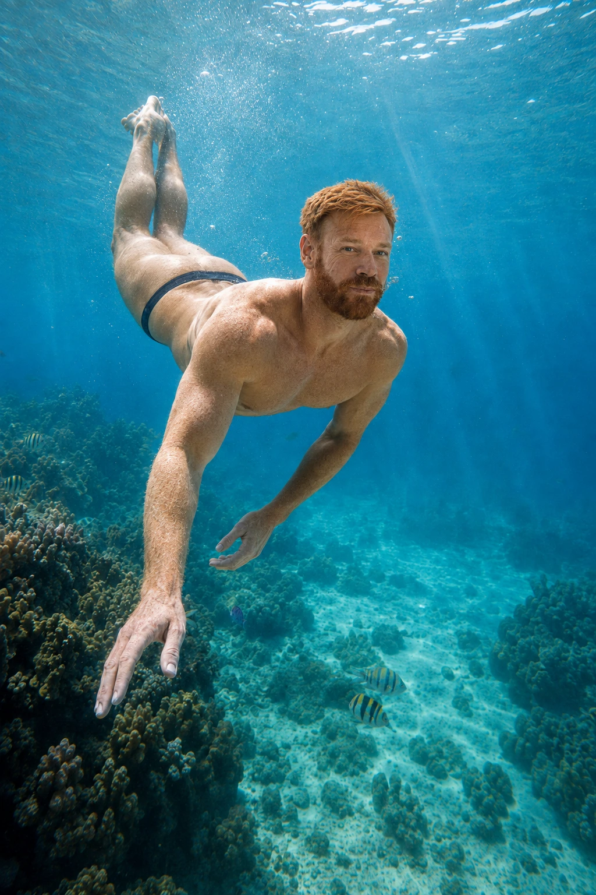

安第斯高原、山谷春天气候、加勒比城墙与七色海。好的路线先决定你想体验哪些反差，再给每一次气候和节奏变化留下真正的时间。
高海拔、博物馆、街区与一座需要背景来理解的首都。
温和气候、城市设计、转型，以及城市与山脉之间独特的关系。

城墙、建筑、炎热；如果中午留白，节奏会舒服很多。
七色海、休息和水上体验才是主角。更适合完整延伸，而不是匆忙停留。
波哥大 + 卡塔赫纳反差最强；麦德林 + 卡塔赫纳则减少高海拔适应。
波哥大 + 麦德林 + 卡塔赫纳，使用国内航班，每个城市至少住满两晚。
波哥大或麦德林 + 卡塔赫纳 + 圣安德烈斯，海岛要有独立时间，也要给天气留余量。
四地都去，但给交通、转场和休息留下真正缓冲。

波哥大需要一点高海拔和天气适应。先从老城与博物馆开始，把 Monserrate 留给能见度好的时段，再去北区街区。不要把首都当作单纯中转站。

麦德林的魅力来自山谷、街区、公共交通和城市转型之间的关系。Comuna 13 很重要，但应该和城市的其他层次一起看。

卡塔赫纳有建筑和氛围，但炎热会改变一天的节奏。早晨与傍晚更适合步行，中午要留给阴凉、休息和更少的安排。坐船的一天最好独立计算。

到了圣安德烈斯，海水会成为旅行主角。给风和海况留出余量，不要把所有水上活动塞进一天，也不要把海岛只当成拍照停留。
部分链接可能为 Lipe Travel Show 带来佣金，但不会增加旅行者支付的金额。